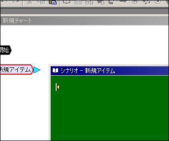
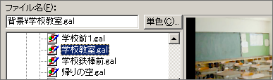
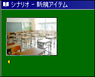

チュートリアル

ゲームのメイン部分であるシナリオを作成します。
では、チャートの中にある「新規アイテム」をダブルクリックしてください。すると、シナリオウィンドウが左のような状態になります。
シナリオ編集はHTMLエディタのようになっています。ここに書いた文章が上から下に向かって順に画面に表示されることになります。
また、シナリオには、文字の他にコマンドを埋め込むことができます。「挿入」メニューの中を見てみてください。クリック待ち、ウエイト・・・とありますが、これらがシナリオ中に含めることができるコマンドです。
では、画像を表示することから始めてみましょう。「プロジェクト」メニューの「グラフィックフォルダを開く」を選択すると、フォルダが開きます。プロジェクトで使用するグラフィックファイル(.GALや.LCM)をこのフォルダの中に入れてください。サブフォルダを作っても構いませんので、「背景」「人物」など分かりやすいようにフォルダを作ってファイルを収納してください。ただし、あらかじめ用意されているサブフォルダ（CGモード、シーン回想、顔、名前）は用途が決まっていますので削除などしないでください。
画像が用意できたら、「挿入」メニューの「画像表示」を選択してください。ダイアログが表示されたら順番に設定していきます。

まず「ファイル名」ですが、これは表示する画像ファイルです。下のツリーの中から目的の画像を選択すれば、自動的にファイル名が入ります。
「単色」ボタンで色を選択すると、画像ファイルではなく単色塗りつぶしのサーフェスが作成されます。ここでは画像ファイルを選択することにします。
次は「名前」です。これは画像に付ける名前で、表示した後で画像を別の画像に変えたり、画面から消去する際にこの名前を使って指示を出します。ここでは背景として画像を表示したいので名前も「背景」とします。
次は「横の位置」「縦の位置」です。位置は、画面に対して揃える他、座標で指定することもできます。ここではどちらも「中央寄せ」にします。
「プライオリティ」は、画像が画面の奥にあるか手前にあるかという設定です。ここでは「背景奥」にします。
Memo
LiveNovelにはサーフェスが何面までという制限はありません。プライオリティもデフォルトでは５種類ですが、オプション画面で自由に編集することができます |
「画面効果」は画像をどのように出現させるかという設定です。実際の効果を見ながら調整することができます。ここではデフォルトのままにしておきます。
最後は「再生タイプ」ですが、これは静止画の場合は意味がないので、「通常再生」のままにしておきます。
ではOKをクリックしてください。
このように画像が表示されれば成功です。
F5キーを押してゲームを実行してみてください。そしてフェードインで画像が表示されることを確認してください。